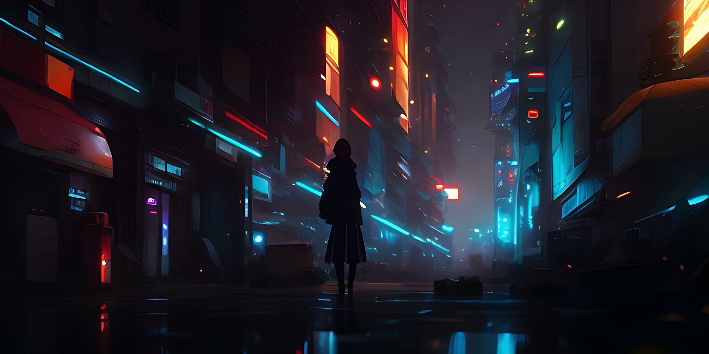

Our Story
The project began as a dystopian film project in 2010 and switched to a podcast in 2022. "STATE OF CHANGE" focussed the handling of limited natural resources, which are essential for the maintenance of our subsistence. This podcast will strongly and unconventionally address the conflict around the possession of essential and substantial resources and identify possible solutions.